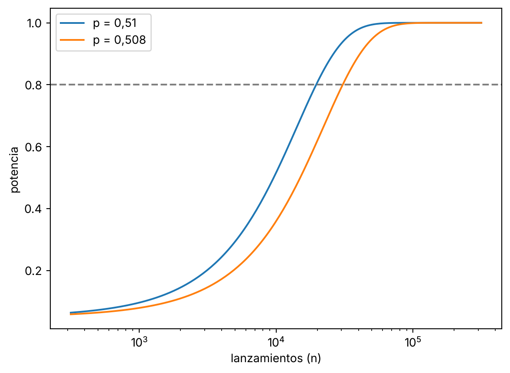

import numpy as np
import matplotlib.pyplot as plt
from math import erf, erfc, sqrt
np.random.seed(51)
P0, P1, Z_A = 0.5, 0.51, 1.959964Un 51 % de caras existe y con mil lanzamientos no lo ves
probabilidad
simulación
python
Una moneda lanzada con la mano puede caer del lado en que empezó el 51 % de las veces. Te cuento cuántos lanzamientos hacen falta para notarlo.
Diaconis, Holmes y Montgomery estimaron que una moneda lanzada con la mano cae del lado en que empezó el 51 % de las veces.
Imagina que tienes una así y que siempre la lanzas con cara arriba. Mil lanzamientos, 480 caras.
¿Has visto el sesgo?
Lo que hace la física
En 2007 filmaron lanzamientos con cámara de alta velocidad y los modelaron (SIAM Review 49(2)). Una moneda que gira no gira exactamente sobre su propio eje. El eje se inclina un poco y la moneda pasa algo más de tiempo con la cara de partida hacia arriba.
El efecto es pequeño. Según su estimación, ronda el 0,51.
A mí me interesa otra cosa: qué hay que hacer con un 0,51 para verlo. La física la dejo ahí. Doy el 0,51 por bueno y pregunto cuántos lanzamientos necesitas.
Mil lanzamientos
Con una moneda de probabilidad \(p\) y \(n\) lanzamientos, la proporción de caras se mueve alrededor de \(p\) con un error estándar de
\[\sqrt{p(1-p)/n}.\]
Es lo que se desvía una muestra típica del valor verdadero. Con \(n=1000\) y \(p=0{,}51\) sale 0,016: un punto y medio arriba o abajo. El sesgo mide un punto.
Defino el test que usaría cualquiera. Cuenta cuántos errores estándar se aleja la proporción observada de 0,5 y mira lo raro que es.
def p_valor(caras, n, p0=P0):
"""Test normal bilateral de H0: p = p0."""
z = (caras / n - p0) / sqrt(p0 * (1 - p0) / n)
return z, erfc(abs(z) / sqrt(2))Ahora lanzo la moneda sesgada mil veces.
n = 1000
caras = np.random.binomial(n, P1)
z, p = p_valor(caras, n)
print("e.e. teorico:", round(sqrt(P1 * (1 - P1) / n), 4))
print("caras:", caras, "proporcion:", caras / n)
print("z:", round(z, 3), "p-valor:", round(p, 4))e.e. teorico: 0.0158
caras: 480 proporcion: 0.48
z: -1.265 p-valor: 0.2059Salen 480 caras. Ni siquiera estás por encima del 50 %.
El ruido ha tapado el sesgo y además le ha dado la vuelta. El p-valor es 0,21: nada que rechazar. Sale esto porque he fijado una semilla y no he buscado otra más amable.
Diez mil lanzamientos
Con diez veces más datos, el error estándar baja a 0,005. El sesgo vale ya dos errores estándar.
n = 10000
caras = np.random.binomial(n, P1)
z, p = p_valor(caras, n)
print("e.e. teorico:", round(sqrt(P1 * (1 - P1) / n), 4))
print("caras:", caras, "proporcion:", caras / n)
print("z:", round(z, 3), "p-valor:", round(p, 4))e.e. teorico: 0.005
caras: 5120 proporcion: 0.512
z: 2.4 p-valor: 0.0164Esta vez sí. Con 5.120 caras el p-valor es 0,016 y rechazas que la moneda sea justa.
Pero yo lo he hecho una vez. Mi muestra dio 0,512 y la moneda tiene 0,51. Un poco de suerte y rechazas. Un poco de mala suerte y no.
Lo que importa es cuántas veces te saldría.
La potencia
A esa pregunta se la llama potencia: la probabilidad de que el test rechace cuando la moneda de verdad está sesgada. Con una moneda justa rechazas por error el 5 % de las veces, porque así se fija el umbral. Con una sesgada, la potencia dice cuántas veces aciertas.
Hay fórmula. Aquí la dejo en código y la compruebo con simulación: 2.000 repeticiones por cada tamaño.
def potencia_teorica(n, p):
"""Probabilidad de rechazar H0: p=0,5 si la moneda tiene p."""
d = abs(p - P0) * np.sqrt(n)
s0, s1 = sqrt(P0 * (1 - P0)), sqrt(p * (1 - p))
cdf = lambda x: 0.5 * (1 + np.vectorize(erf)(x / sqrt(2)))
return cdf((d - Z_A * s0) / s1) + cdf((-d - Z_A * s0) / s1)Los dos términos son las dos colas del test: una por cada lado del test. La segunda es rechazar por el lado contrario y, con estos tamaños, vale casi cero.
REPS = 2000
rejilla = np.array([1000, 2000, 5000, 10000, 20000, 50000, 100000])
def potencia_simulada(n, p):
caras = np.random.binomial(n, p, size=REPS)
z = (caras / n - P0) / sqrt(P0 * (1 - P0) / n)
return np.mean(np.abs(z) > Z_A)
print(f"{'n':>7} | {'sim 0,51':>8} {'teo 0,51':>8}")
for n in rejilla:
print(f"{n:>7} | {potencia_simulada(n, 0.51):8.3f} {potencia_teorica(n, 0.51):8.3f}") n | sim 0,51 teo 0,51
1000 | 0.095 0.097
2000 | 0.140 0.145
5000 | 0.299 0.293
10000 | 0.522 0.516
20000 | 0.793 0.807
50000 | 0.993 0.994
100000 | 1.000 1.000Simulación y fórmula coinciden, salvo el ruido de las 2.000 repeticiones.
Con mil lanzamientos la potencia es 0,10. Con una moneda sesgada al 51 % rechazas el 10 % de las veces. Con una moneda justa rechazarías el 5 %. El test apenas distingue una moneda de la otra.
Con diez mil, 0,52. Lanzar una moneda al aire tiene la misma potencia. Mi 5.120 de antes era exactamente eso.
Cuántos lanzamientos hacen falta
Busco el \(n\) más pequeño que llega a una potencia de 0,5. Y el que llega a 0,8, que es lo que se suele pedir al diseñar un experimento.
grid = np.arange(100, 400001, 100)
for p in (0.51, 0.508):
pot = potencia_teorica(grid, p)
n50 = grid[np.argmax(pot >= 0.5)]
n80 = grid[np.argmax(pot >= 0.8)]
print(f"p={p}: n para potencia 0,5 = {n50}; para 0,8 = {n80}")p=0.51: n para potencia 0,5 = 9700; para 0,8 = 19700
p=0.508: n para potencia 0,5 = 15100; para 0,8 = 30700Para ver un 0,51 cuatro de cada cinco veces necesitas unos 20.000 lanzamientos. Para tener la misma seguridad con un 0,508 necesitas unos 30.000.
El 0,508 sale de un estudio de Bartoš y colaboradores, que lanzaron monedas reales 350.757 veces y contaron en qué lado caían (arXiv:2310.04153).
ns = np.logspace(2.5, 5.5, 200)
fig, ax = plt.subplots()
ax.plot(ns, potencia_teorica(ns, 0.51), label="p = 0,51")
ax.plot(ns, potencia_teorica(ns, 0.508), label="p = 0,508")
ax.axhline(0.8, color="grey", linestyle="--")
ax.set_xscale("log")
ax.set_xlabel("lanzamientos (n)")
ax.set_ylabel("potencia")
ax.legend()
plt.show()
La línea discontinua marca el 0,8. Fíjate en la escala del eje horizontal: cada tramo multiplica por diez. Para pasar de una potencia ridícula a una decente hay que gastar un orden de magnitud entero.
Por qué esto te importa
Cuando un experimento sale sin resultado, lo normal es leerlo como “no hay efecto”. Con un efecto pequeño, un experimento sin resultado puede significar solo que no tenías datos suficientes.
Mis 480 caras de antes eran eso: un experimento que no podía salir.
Ese cálculo se hace antes de lanzar la primera moneda. Con la potencia en la mano sabes cuántos datos necesitas. Luego hay que respetarlo: si fijas \(n\) y miras una vez, el 5 % es un 5 %. Si abres el panel cada mañana y paras cuando baja de 0,05, el 5 % ya no es un 5 %.
En tu próximo A/B con una mejora de un punto, pregunta primero cuántos usuarios hacen falta. Si la respuesta es más de los que tienes, el experimento no va a contestar.